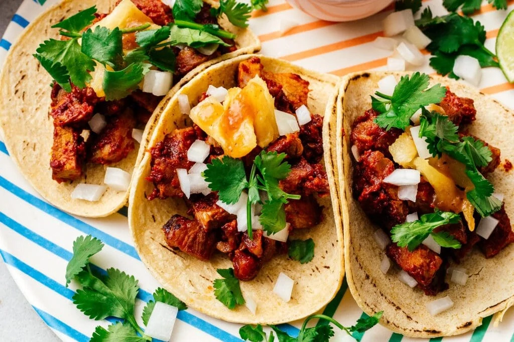
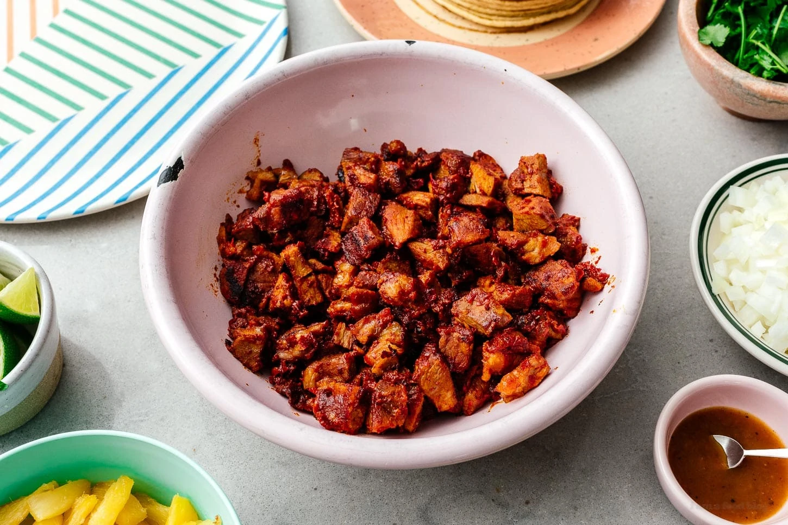

Pork chop tacos

al pastor is a Mexican dish with pork that’s been slow
roasted on a vertical spit. Vertical spits are often
associated with middle eastern food and this is no exception.
Legend says that Lebanese immigrants brought the cooking method
to Mexico, where they paired it with traditional
adobada to make the genius style known as al pastor.
It’s served in all kinds of dishes, from tortas/sandwiches,
to pizzas, and even on rice, but the most celebrated way to
serve it is in tacos al pastor. The crisp smoky pork is
sliced-to-order with a razor sharp knife as it’s flame crisped
by the vertical spit. The meat falls right into each
taco and topped with a flourish of slow-roasted pineapple.
It’s heaven in a tiny tortilla.
Here is the recipe/ingredients:
-
pork meat
-
chipotle chilies in adobo
-
achiote paste
-
canned pineapples
-
tortillas
Steps in cooking your al pastor pork tacos!
-
Soak your chiles. Guajillos come dried and soaking
them makes them pliable and easy to deseed.
-
Slice and season your pork. I try to go for as thin of a slice as possible,
so that there’s more surface area to absorb the marinade.
-
Make the marinade. Blend the guajillos together with garlic,
sugar, achiote, adobo, and pineapple juice until smooth.
-
Marinate. Marinate your pork for at least 30 minutes,
but better yet, overnight.
-
Roast. You probably don’t have a vertical spit at home,
so the best way to achieve that combination of soft supple
insides and crispy, smoky edges is to lay out the pork in a
single layer and broil at 500ºF until cooked. Don’t forget
to roast your pineapples as well (on a separate baking sheet).

-
Prep your toppings. Dice your onions,
chop your cilantro, slice your jalapenos,
and portion out your salsas.
-
Chop it up. Roughly chop your pork so that the majority
of the pieces are about 1/2″ x 1/2″.
-
Crisp up your al pastor. Frying it is optional but
really intensifies the flavors, not to mention gets
it nice and piping hot.
-
Prep your tortillas. If you’re using flour tortillas,
you should cook them now. If corn, cover 10-12 at
a time with a damp paper towel and microwave for
30 seconds (or use a tortilla warmer like we do).
Build and enjoy! Top with roast pineapples and
all the other toppings you love.

Back to Homepage
Original Authors:iamafoodblog.com